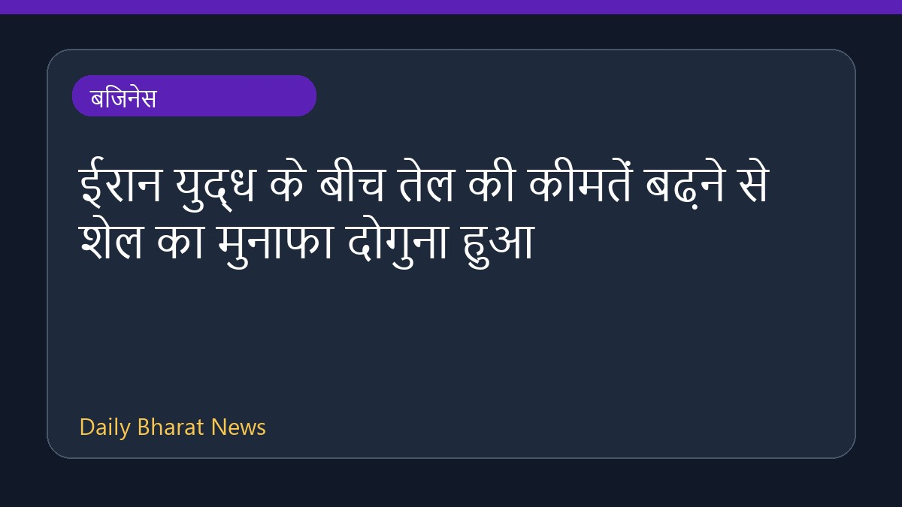

ईरान युद्ध के बीच तेल की कीमतें बढ़ने से शेल का मुनाफा दोगुना हुआ

ईरान युद्ध के कारण वैश्विक स्तर पर कच्चे तेल की कीमतों में आई तेजी से ऊर्जा क्षेत्र की प्रमुख कंपनी शेल का मुनाफा दोगुना हो गया है। हॉर्मुज जलडमरूमध्य के माध्यम से होने वाली कच्चे तेल और तरल प्राकृतिक गैस की अंतरराष्ट्रीय आपूर्ति बाधित हुई है। इस वैश्विक आपूर्ति बाधा ने अंतरराष्ट्रीय बाजारों में ईंधन की कीमतों को बढ़ा दिया है। हालांकि, इस रिपोर्ट में वित्तीय विवरणों से संबंधित आंकड़े सीमित हैं और अन्य विस्तृत जानकारी उपलब्ध नहीं कराई गई है। आपूर्ति में आई इस रुकावट से वैश्विक ऊर्जा क्षेत्र प्रभावित हुआ है।
संपादकीय संदर्भ
यह समाचार सीधे मूल स्रोत की जानकारी पर आधारित है, लेकिन पाठकों को सलाह दी जाती है कि वे पूरी वित्तीय स्थिति और भू-राजनीतिक विकास की पुष्टि के लिए मूल रिपोर्ट की जाँच करें, क्योंकि इसमें विस्तृत आंकड़े और अतिरिक्त संदर्भ शामिल नहीं हैं।
Shell profits double as oil prices rise due to Iran war ↗